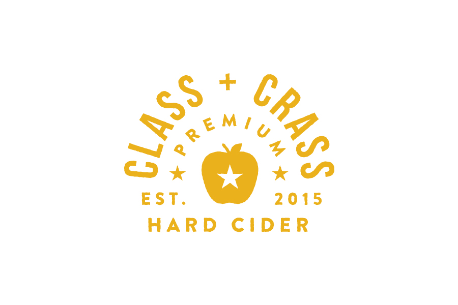
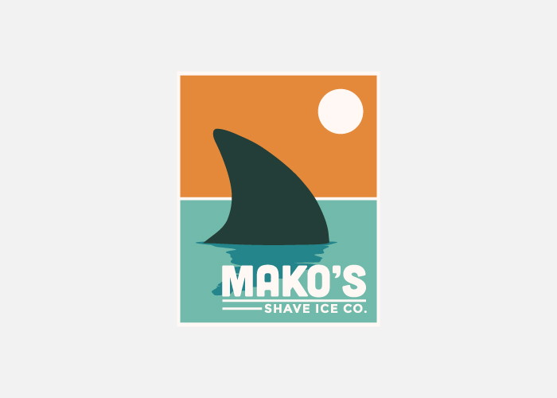
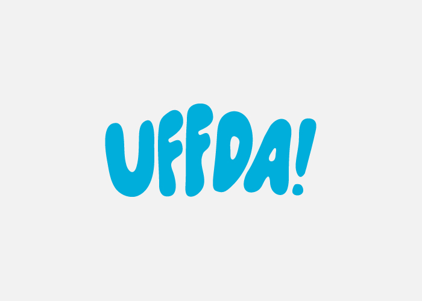
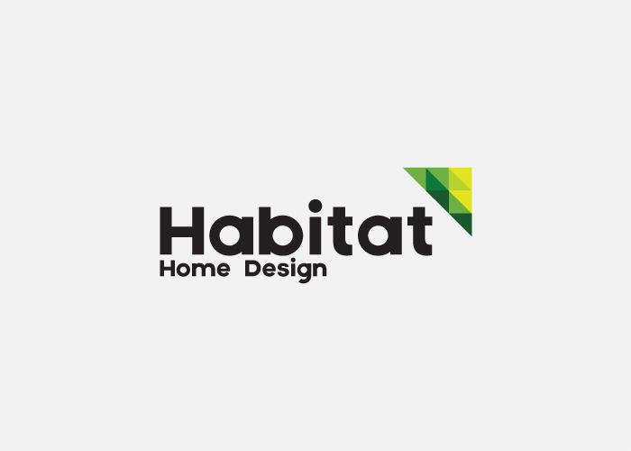

Logos
2013-2015
A selection of logos, trademarks, and logotypes created for a variety of clients over the past couple of years.





2013-2015
A selection of logos, trademarks, and logotypes created for a variety of clients over the past couple of years.